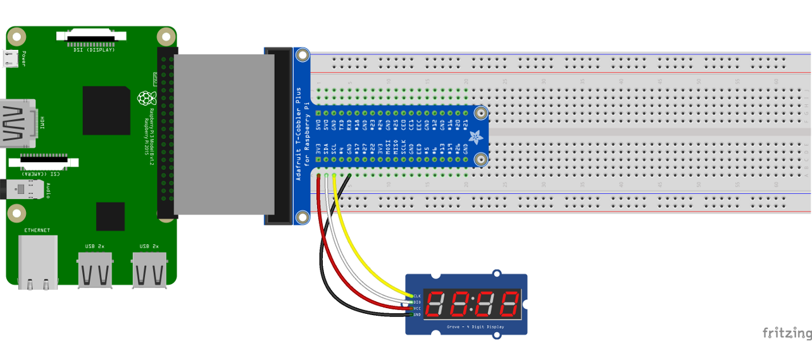
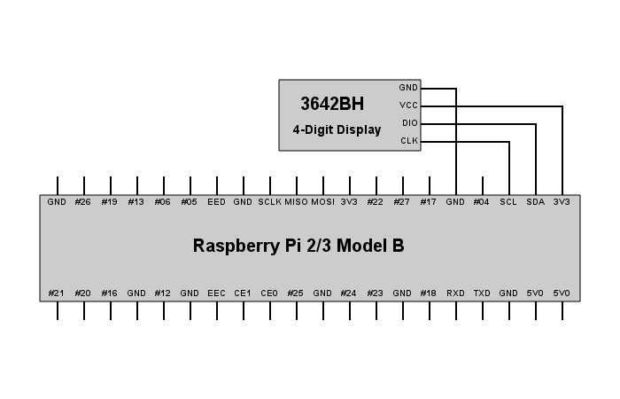

Licenca
To delo je na voljo pod pogoji slovenske licence Creative Commons 2.5:
priznanje avtorstva - nekomercialno - deljenje pod enakimi pogoji.
Celotna licenca je na voljo na spletu na naslovu http://creativecommons.org/licenses/by-nc-sa/2.5/si/. V skladu s to licenco je dovoljeno vsakemu uporabniku delo razmnoževati, distribuirati, javno priobčevati, dajati v najem in tudi predelovati, vendar samo v nekomercialne namene in ob pogoju, da navede avtorja oziroma avtorje in izdajatelja tega dela. Če uporabnik delo predela, kar pomeni, da ga spremeni, preoblikuje, prevede ali uporabi to delo v svojem delu, lahko predelavo dela ponudi na voljo le pod pogoji, ki so enaki pogojem iz te licence oziroma pod enako licenco.

4-številčni 7-segmentni prikazovalnik
Tretja naloga pri projektu igre Simon bo priključitev 4-številčnega 7-segmentnega prikazovalnika. To pomeni, da boš na preizkusno ploščico priklopil 4-številčni 7-segmentni prikazovalnik in ga sprogramiral/-a tako, da bo prikazoval trenutni nivo igre in ustrezno sporočilo ob koncu igre (ali je igralec zmagal, ali je izgubil).
Strojna oprema
- 1 Malina
- 1 preizkusna ploščica (angl. breadboard)
- 1 zatič oblike T s kablom (angl. T-cobbler with breakout cable)
- 1 komponenta TM1637/3642BH 4-številčni 7-segmentni prikazovalnik (angl. 4-digit 7-segment display)
- 4 vtične žičke moški-ženska (angl. jumper wire male-to-female)
Programska oprema
- Python 3 (prednameščen na Raspbianu)
- Pythonov modul
RPi.GPIO(prednameščen na Raspbianu), ki ga za delovanje potrebuje modultm1637 - Pythonov modul
time(prednameščen na Raspbianu) - Pythonov modul
tm1637(datoteka modula tm1637.py biti mora v isti mapi kot datoteka s kodo, da modul lahko vključiš v svojo kodo)
Primere uporabe modula tm1637 si lahko ogledaš v datoteki test.py.
Navodila
- Poveži Malinine GPIO nožice in preizkusno ploščico s pomočjo T-zatiča in kabla.
- Poveži nožico GND komponente z nožico GND na Malini (glej zavihek Vezje).
- Poveži nožico DIO komponente z nožico SDA na Malini (glej zavihek Vezje).
- Poveži nožico CLK komponente z nožico SCL na Malini (glej zavihek Vezje).
- Poveži nožico VCC komponente z nožico 3V3 na Malini (glej zavihek Vezje).
- Odpri IDLE in ustvari novo datoteko tako, da klikneš File > New file.
- Shrani novo datoteko tako, da klikneš File > Save. Datoteki daj ime
simon3.py. - V datoteko
simon3.pyvnesi kodo z zavihka Koda. - Shrani kodo s Ctrl+S in jo nato zaženi s F5.
- Ko boš pognal(-a) program, bo prikazovalnik zaporedno prikazoval nivoje igre od 1 do 20 ter nato še ustrezni sporočili ob koncu igre (ali je igralec zmagal, ali je izgubil).


# encoding: utf-8
import tm1637
import time
prikaz = tm1637.TM1637(3, 2)
# Prikazuje napise nivojev v zaporedju od 1 do 20.
# Prototip napisa za 1. nivo izgleda takole: nI:01
prikaz.clear()
for i in range(1, 21):
D = i // 10 # desetice
E = i % 10 # enice
prikaz.set_values(['n', 'I', D, E])
prikaz.set_doublepoint(True)
time.sleep(1)
# Kadar igralec izgubi: buuu
prikaz.set_doublepoint(False)
prikaz.set_values(['b', 'u', 'u', 'u'])
time.sleep(1)
# Kadar igralec zmaga: JAAA
prikaz.set_doublepoint(False)
prikaz.set_values(['J', 'A', 'A', 'A'])
time.sleep(1)
prikaz.clear()
prikaz.cleanup()
 Izvorna koda
Izvorna koda